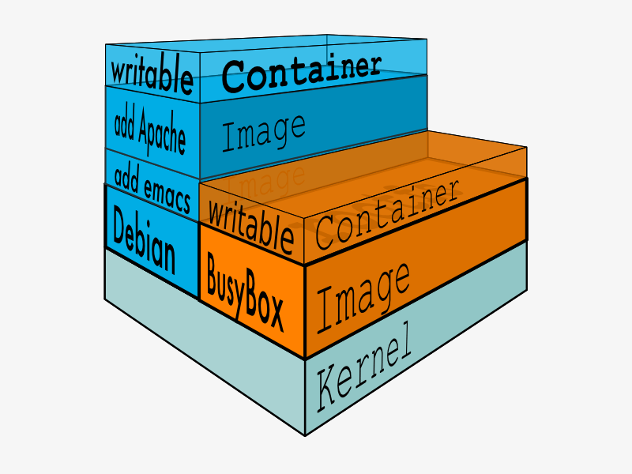
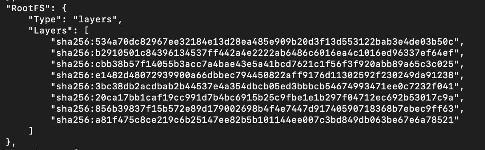
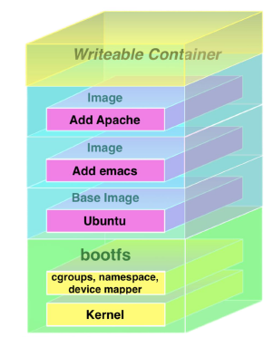
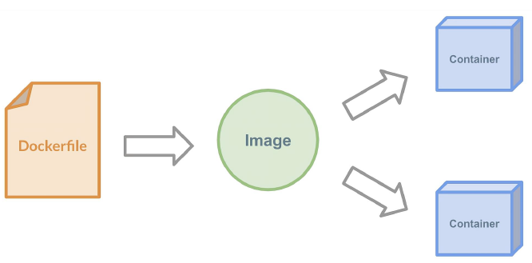
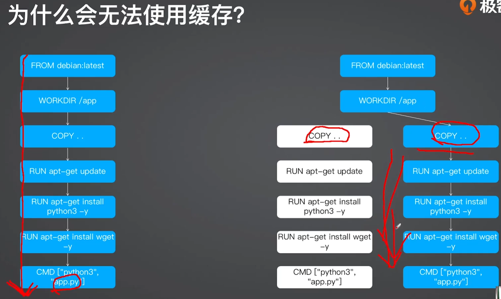
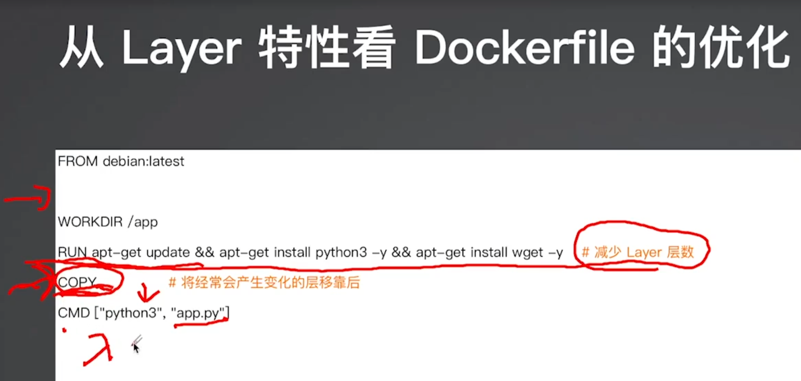
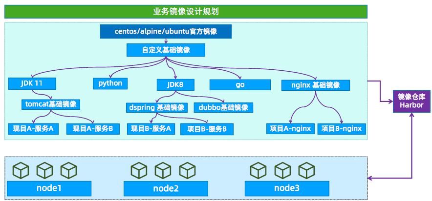

Dockerfile
镜像简介：
Docker can build images automatically by reading the instructions from a Dockerfile. A Dockerfile is a text document that contains all the commands a user could call on the command line to assemble an image. Using docker build users can create an automated build that executes several command-line instructions in succession.
https://docs.docker.com/engine/reference/builder/
镜像的内部机制
镜像就是一个打包文件，里面包含了应用程序还有它运行所依赖的环境，例如文件系统、环境变量、配置参数等等。
环境变量、配置参数这些东西还是比较简单的，随便用一个manifest清单就可以管理，真正麻烦的是文件系统。为了保证容器运行环境的一致性，镜像必须把应用程序所在操作系统的根目录，也就是rootfs，都包含进来。
虽然这些文件里不包含系统内核（因为容器共享了宿主机的内核），但如果每个镜像都重复做这样的打包操作，仍然会导致大量的冗余。可以想象，如果有一千个镜像，都基于Ubuntu系统打包，那么这些镜像里就会重复一千次Ubuntu根目录，对磁盘存储、网络传输都是很大的浪费。
很自然的，我们就会想到，应该把重复的部分抽取出来，只存放一份Ubuntu根目录文件，然后让这一千个镜像以某种方式共享这部分数据。
这个思路，也正是容器镜像的一个重大创新点：分层，术语叫“ Layer”。
容器镜像内部并不是一个平坦的结构，而是由许多的镜像层组成的，每层都是只读不可修改的一组文件，相同的层可以在镜像之间共享，然后多个层像搭积木一样堆叠起来，再使用一种叫“ Union FS联合文件系统”的技术把它们合并在一起，就形成了容器最终看到的文件系统（ 图片来源）。
{kind=link}

可以用命令 docker inspect 来查看镜像的分层信息，比如nginx:alpine镜像：
docker inspect nginx:alpine
它的分层信息在“RootFS”部分：

通过这张截图就可以看到，nginx:alpine镜像里一共有6个Layer。
Dockerfile 是什么
-
Dockerfile 是用于构建docker镜像的文件
-
docker 镜像基于union file system将多个目录合并挂载至一个目录给容器使用。
-
docker 镜像只有rootfs而没有内核，运行使用的是宿主机的 bootfs
- rootfs(root file system)，文件系统
- bootfs(boot file system)，主要包含 bootloader 和 Kernel
-
一个镜像是有一层或者多层合并而成，每一层称为是一个layer。
-
镜像可以基于其它镜像进行重新构建，被引用的镜像称为父镜像。
-
一个镜像可以同时被创建为多个容器。
-
镜像是只读的，任何的更改都不会直接修改镜像。

深入镜像本质
- 联合文件系统是镜像的基础
- 镜像是多层 Layer 的堆叠
- 构建时通过叠加新的 Layer 来实现更改
- Layer 在构建时会被缓存
- Layer 以 hash 命名
# 这个dockerfile构建后的镜像有 2 层！
# 第一层是基础镜像，第二层是安装 nginx 带来的变更,CMD不算
# CMD、LABEL、EXPOSE、ARGS 都不会创建新层
FROM deain:latest
RUN apt-get update && apt-get install nginx -y
CMD ["nginx", "-g", "daemon off;"]
Dockerfile 与镜像的关系：

Dockerfile 构建镜像：
https://docs.docker.com/engine/reference/builder/
DockerFile 是一个可以被 Docker 程序解释的文本文件，其中由指定的命令组成，在构建镜像的过程中，Docker 程序会读取 DockerFile 文件内容并生成一个临时容器、然后在临时容器中从上向下顺序执行 DockerFile 的指令，当执行完所有的指令后再把临时容器提交为一个 Docker 镜像，这样就完成的一个镜像的构建，基于 DockerFile 构建镜像便于后期对镜像的内容进行调整，因此在企业中有了提前编写好的各种各样DockerFile文件就可以快速构建出不同的业务镜像，而当后期某个镜像有额外的需求时，只要在之前的 DockerFile 添加或者修改相应的内容、即可重新生成新的 Docker 镜像然后部署在业务容器环境中(docker、docker-compsoe、swarm、kubernetes、openshift等)。
Dockerfile 指令：
FROM
FROM centos:7.9.2009
在整个dockfile文件中除了注释之外的第一行，要是FROM ，FROM 指令当前镜像的用于指定父镜像(base image)
如何选择基础镜像：
- 官方镜像优于非官方的镜像，如果没有官方镜像，则尽量选择Dockerfile开源的；
- 固定版本tag而不是每次都使用latest；
- 尽量选择体积小的镜像
MAINTAINER
MAINTAINER #（镜像的维护者信息，目前已经不推荐使用）
LABEL
LABEL "key" = "value" # 设置镜像的属性标签
LABEL author="keti ketitx@qq.com" #有空格要加引号
LABEL version="1.0"
ADD & COPY
ADD [--chown=<user>:<group>] <src>... <dest>
#用于添加宿主机本地的文件、目录、压缩等资源到镜像里面去，会自动解压 tar.gz 格式的压缩包，但不会自动解压 zip 包（因为内核中是有tar命令的，但是没有zip命令）
COPY COPY [--chown=<user>:<group>] <src>... <dest>
#用于添加宿主机本地的文件、目录、压缩等资源到镜像里面去，不会解压任何压缩包
ADD 和 COPY 的区别
复制普通文件
COPY 和 ADD 都可以把local的一个文件复制到镜像里，如果目标目录不存在，则会自动创建
FROM python:3.9.5-alpine3.13
COPY hello.py /app/hello.py
比如把本地的 hello.py 复制到 /app 目录下。 /app 这个folder不存在，则会自动创建
复制压缩文件
ADD 比 COPY高级一点的地方就是，如果复制的是一个gzip等压缩文件时，ADD会帮助我们自动去解压缩文件。
FROM python:3.9.5-alpine3.13
ADD hello.tar.gz /app/
如何选择
因此在 COPY 和 ADD 指令中选择的时候，可以遵循这样的原则，所有的文件复制均使用 COPY 指令，仅在需要自动解压缩的场合使用 ADD。
ENV
ENV MY_NAME="John Doe" #设置容器环境变量
ARG 和 ENV 的区别
ARG 可以在镜像 build 的时候动态修改 value, 通过 --build-arg
$ docker image build -f .\\\\Dockerfile-arg -t ipinfo-arg-2.0.0 --build-arg VERSION=2.0.0 .
$ docker image ls
REPOSITORY TAG IMAGE ID CREATED SIZE
ipinfo-arg-2.0.0 latest 0d9c964947e2 6 seconds ago 124MB
$ docker container run -it ipinfo-arg-2.0.0
root@b64285579756:/#
root@b64285579756:/# ipinfo version
2.0.0
root@b64285579756:/#
ENV 设置的变量可以在 Image 中保持，并在容器中的环境变量里。
USER
USER <user>[:<group>] or USER <UID>[:<GID>] #指定运行操作的用户
通过 RUN 执行指令
RUN yum install vim unzip -y && cd /etc/nginx #执行shell命令，但是一定要以非交互式的方式执行
每一行的RUN命令都会产生一层image layer, 导致镜像的臃肿。
一种推荐的写法:
FROM ubuntu:20.04
RUN apt-get update && \\\\
apt-get install -y wget && \\\\
wget <https://github.com/ipinfo/cli/releases/download/ipinfo-2.0.1/ipinfo_2.0.1_linux_amd64.tar.gz> && \\\\
tar zxf ipinfo_2.0.1_linux_amd64.tar.gz && \\\\
mv ipinfo_2.0.1_linux_amd64 /usr/bin/ipinfo && \\\\
rm -rf ipinfo_2.0.1_linux_amd64.tar.gz
RUN apt-get update \\\\
&& apt-get install -y \\\\
build-essential \\\\
curl \\\\
make \\\\
unzip \\\\
&& cd /tmp \\\\
&& curl -fSL xxx.tar.gz -o xxx.tar.gz\\\\
&& tar xzf xxx.tar.gz \\\\
&& cd xxx \\\\
&& ./config \\\\
&& make \\\\
&& make clean
有的时候在Dockerfile里写这种超长的 RUN 指令很不美观，而且一旦写错了，每次调试都要重新构建也很麻烦，所以你可以采用一种变通的技巧： 把这些Shell命令集中到一个脚本文件里，用 COPY 命令拷贝进去再用 RUN 来执行：
COPY setup.sh /tmp/ # 拷贝脚本到/tmp目录
RUN cd /tmp && chmod +x setup.sh \\\\ # 添加执行权限
&& ./setup.sh && rm setup.sh # 运行脚本然后再删除
VOLUME ["/data/data1","/data/data2"] #定义volume
WORKDIR /data/data1 #用于定义当前工作目录
EXPOSE <port> [<port>/<protocol>...]
#声明要把容器的某些端口映射到宿主机
延伸阅读
- https://pythonspeed.com/articles/base-image-python-docker-images/
- Using Alpine can make Python Docker builds 50× slower
关于 CMD 与 ENTRYPOINT：
-
CMD有以上三种方式定义容器启动时所默认执行的命令或脚本
-
CMD ["executable","param1","param2"] (exec form, this is the preferred form) #推荐的可执行程序方式
-
CMD ["param1","param2"] (as default parameters to ENTRYPOINT) #作为ENTRYPOINT默认参数
-
CMD command param1 param2 (shell form) #基于shell命令的
-
如：基于CMD #镜像启动为一个容器时候的默认命令或脚本，
- CMD ["/bin/bash"]
-
-
ENTRYPOINT #也可以用于定义容器在启动时候默认执行的命令或者脚本，如果是和 CMD 命令混合使用的时候，会将 CMD 的命令当做参数传递给 ENTRYPOINT 后面的脚本，可以在脚本中对参数做判断并相应的容器初始化操作。
-
CMD设置的命令，可以在docker container run 时传入其它命令，覆盖掉CMD的命令，但是ENTRYPOINT所设置的命令是一定会被执行的。 -
案例1：
ENTRYPOINT ["top", "-b"]
CMD ["-c"]
等于如下一行：
ENTRYPOINT ["top", "-b", "-c"]
- 案例2：
ENTRYPOINT ["docker-entrypoint.sh"] #定义一个入口点脚本，并传递mysqld 参数
CMD ["mysqld"]
等于如下一行：
ENTRYPOINT ["docker-entrypoint.sh","mysqld"]
- 使用总结：
ENTRYPOINT(脚本) + CMD(当做参数传递给ENTRYPOINT)
Shell 格式和 Exec 格式
CMD 和 ENTRYPOINT 同时支持 shell 格式和 Exec 格式。
Shell格式
CMD echo "hello docker"
ENTRYPOINT echo "hello docker"
Exec格式
以可执行命令的方式
CMD ["echo", "hello docker"]
ENTRYPOINT ["echo", "hello docker"]
注意shell脚本的问题
FROM ubuntu:20.04
ENV NAME=docker
CMD echo "hello $NAME"
假如我们要把上面的CMD改成Exec格式，下面这样改是不行的, 大家可以试试。
FROM ubuntu:20.04
ENV NAME=docker
CMD ["echo", "hello $NAME"]
它会打印出 hello $NAME , 而不是 hello docker ,那么需要怎么写呢？ 我们需要以shell脚本的方式去执行
FROM ubuntu:20.04
ENV NAME=docker
CMD ["sh", "-c", "echo hello $NAME"]
Shell 和 Exec 的区别：指定的命令是否是在 shell 中调用。
Dockerfile 构建镜像：
FROM ubuntu:22.04
MAINTAINER "keti xxxxxxxxx@qq.com"
ADD sources.list /etc/apt/sources.list
RUN apt update && apt install -y iproute2 ntpdate tcpdump telnet traceroute nfs-kernel-server nfs-common lrzsz tree openssl libssl-dev libpcre3
libpcre3-dev
zlib1g-dev ntpdate tcpdump telnet traceroute gcc openssh-server lrzsz tree openssl libssl-dev libpcre3 libpcre3-dev zlib1g-dev ntpdate tcpdump
telnet tracerou
te iotop unzip zip make
ADD nginx-1.22.0.tar.gz /usr/local/src/
RUN cd /usr/local/src/nginx-1.22.0 && ./configure --prefix=/apps/nginx && make && make install && ln -sv /apps/nginx/sbin/nginx /usr/bin
RUN groupadd -g 2088 nginx && useradd -g nginx -s /usr/sbin/nologin -u 2088 nginx && chown -R nginx.nginx /apps/nginx
ADD nginx.conf /apps/nginx/conf/
ADD frontend.tar.gz /apps/nginx/html/
EXPOSE 80 443
#ENTRYPOINT ["nginx"]
CMD ["nginx","-g","daemon off;"]
构建并验证镜像：
root@docker-server1:/opt/ubuntu# bash build-command.sh
root@docker-server1:/opt/ubuntu# docker images
REPOSITORY TAG IMAGE ID CREATED SIZE
harbor.ketitx.com/myserver/nginx v1 4b6ec2cfda10 14 minutes ago 468MB
基于镜像创建容器：
root@docker-server1:/opt/ubuntu# docker run -it -p 80:80 harbor.ketitx.com/myserver/nginx:v1
手动将容器提交为镜像：
root@docker-server1:~# docker commit --help
Usage: docker commit [OPTIONS] CONTAINER [REPOSITORY[:TAG]]
Create a new image from a container's changes
-a, --author string #镜像作者信息
-c, --change list #Dockerfile中的指令
-m, --message string #镜像提交信息
-p, --pause #提交镜像过程中暂定容器，默认为true
root@docker-server1:~# docker commit -m "nginx image v2" -a "keti xxxxxxxxx@qq.com" -c "EXPOSE 80 443" 3ac3619d2b61
harbor.ketitx.com/myserver/nginx:v2
root@docker-server1:~# docker run -it -p 81:80 harbor.ketitx.com/myserver/nginx:v2
构建缓存

从 Layer 特性看 Dockerfile 的优化

Dockerfile 最佳实践
-
减少层数
-
注意语句顺序
-
使用 .dockerignore
-
减小镜像体积
- 选择合适的基础镜像（Alpine、slim等）
- 使用多阶段构建
-
安全
- 避免使用 root 用户
-
其他
- 固定基础镜像的 tag
- 尽量使用官方镜像
- 设置时区
# Apline
ENV TZ Asia/Shanghai
RUN apk add tzdata %% cp /usr/share/zoneinfo/${TZ} /etc/localtime \
&& echo ${TZ} > /etc/timezone \
&& apk del tzdata
# Debian
ENV TZ=Asia/Shanghai \
DEBIAN_FRONTEND=noninteractive
RUN ln -fs /usr/share/zoneinfo/${TZ} /etc/localtime \
&& echo ${TZ} > /etc/timezone \
$$ dpkg-reconfigure --fronted noninteractive tzdata \
&& rm -rf /var/lib/apt/lists/*
业务规划及镜像分层构建：
- 系统base 镜像构建
- Nginx 基础镜像构建
- Nginx业务镜像构建
- 在kubernetes业务测试环境运行nginx容器并测试
- 在kubernetes业务生产环境运行nginx容器并测试

构建系统基础镜像
FROM ubuntu:22.04
LABEL author="keti ketitx@qq.com" #有空格要加引号
LABEL version="1.0"
# 安装基础环境
RUN apt update && apt install -y iproute2 ntpdate tcpdump telnet traceroute nfs-kernel-server nfs-common lrzsz tree openssl libssl-dev libpcre3 libpcre3-dev zlib1g-dev gcc openssh-server tree iotop unzip zip make
多阶段构建
# 第一阶段：构建阶段
# 使用官方的 Go 镜像作为构建环境
FROM golang:1.21 AS builder
# 设置工作目录
WORKDIR /app
# 将本地代码复制到工作目录
COPY . .
# 安装依赖（如果有 go.mod 和 go.sum 文件）
RUN go mod download
# 构建可执行文件
RUN CGO_ENABLED=0 GOOS=linux GOARCH=amd64 go build -o myapp
# 第二阶段：运行阶段
# 使用一个轻量级的镜像作为运行环境
FROM ubuntu:latest
# 安装必要的运行时依赖（如果需要）
RUN apk add --no-cache ca-certificates
# 创建一个非 root 用户
RUN adduser -D -g '' -s /bin/sh appuser
# 设置工作目录
WORKDIR /app
# 将构建阶段生成的可执行文件复制到运行环境
COPY --from=builder /app/myapp /app/myapp
# 切换到非 root 用户运行
USER appuser
# 指定容器启动时运行的命令
CMD ["./myapp"]
.dockerignore（待完善）
什么是Docker build context
Docker是client-server架构，理论上Client和Server可以不在一台机器上。
在构建docker镜像的时候，需要把所需要的文件由CLI（client）发给Server，这些文件实际上就是build context
举例：
$ dockerfile-demo more Dockerfile
FROM python:3.9.5-slim
RUN pip install flask
WORKDIR /src
ENV FLASK_APP=app.py
COPY app.py /src/app.py
EXPOSE 5000
CMD ["flask", "run", "-h", "0.0.0.0"]
$ dockerfile-demo more app.py
from flask import Flask
app = Flask(__name__)
@app.route('/')
def hello_world():
return 'Hello, world!'
构建的时候，第一行输出就是发送build context。11.13MB （这里是Linux环境下的log）
$ docker image build -t demo .
Sending build context to Docker daemon 11.13MB
Step 1/7 : FROM python:3.9.5-slim
---> 609da079b03a
Step 2/7 : RUN pip install flask
---> Using cache
---> 955ce495635e
Step 3/7 : WORKDIR /src
---> Using cache
---> 1c2f968e9f9b
Step 4/7 : ENV FLASK_APP=app.py
---> Using cache
---> dceb15b338cf
Step 5/7 : COPY app.py /src/app.py
---> Using cache
---> 0d4dfef28b5f
Step 6/7 : EXPOSE 5000
---> Using cache
---> 203e9865f0d9
Step 7/7 : CMD ["flask", "run", "-h", "0.0.0.0"]
---> Using cache
---> 35b5efae1293
Successfully built 35b5efae1293
Successfully tagged demo:latest
. 这个参数就是代表了build context所指向的目录
.dockerignore 文件
.vscode/
env/
有了.dockerignore文件后，我们再build, build context就小了很多，4.096kB
$ docker image build -t demo .
Sending build context to Docker daemon 4.096kB
Step 1/7 : FROM python:3.9.5-slim
---> 609da079b03a
Step 2/7 : RUN pip install flask
---> Using cache
---> 955ce495635e
Step 3/7 : WORKDIR /src
---> Using cache
---> 1c2f968e9f9b
Step 4/7 : ENV FLASK_APP=app.py
---> Using cache
---> dceb15b338cf
Step 5/7 : COPY . /src/
---> a9a8f888fef3
Step 6/7 : EXPOSE 5000
---> Running in c71f34d32009
Removing intermediate container c71f34d32009
---> fed6995d5a83
Step 7/7 : CMD ["flask", "run", "-h", "0.0.0.0"]
---> Running in 7ea669f59d5e
Removing intermediate container 7ea669f59d5e
---> 079bae887a47
Successfully built 079bae887a47
Successfully tagged demo:latest
关于 scratch 镜像
Scratch是一个空的Docker镜像。
通过scratch来构建一个基础镜像。
hello.c
#include <stdio.h>
int main()
{
printf("hello docker\\n");
}
编译成一个二进制文件
$ gcc --static -o hello hello.c
$ ./hello
hello docker
Dockerfile
FROM scratch
ADD hello /
CMD ["/hello"]
构建
$ docker build -t hello .
$ docker image ls
REPOSITORY TAG IMAGE ID CREATED SIZE
hello latest 2936e77a9daa 40 minutes ago 872kB
运行
$ docker run -it hello
hello docker
Buildkit
Buildkit这个feature能够提高build的效率。
Linux
在 /etc/docker/daemon.json 里添加（如果没有这个文件，则新建）, 然后重启docker
{ "features": { "buildkit": true } }
或者在执行docker build命令时设置
DOCKER_BUILDKIT=1时为启用buildkit
$ DOCKER_BUILDKIT=1 docker build .
Dockerfile 技巧——尽量使用非root用户
Root的危险性
docker的root权限一直是其遭受诟病的地方，docker的root权限有那么危险么？我们举个例子。
假如我们有一个用户，叫demo，它本身不具有sudo的权限，所以就有很多文件无法进行读写操作，比如/root目录它是无法查看的。
[demo@docker-host ~]$ sudo ls /root
[sudo] password for demo:
demo is not in the sudoers file. This incident will be reported.
[demo@docker-host ~]$
但是这个用户有执行docker的权限，也就是它在docker这个group里。
[demo@docker-host ~]$ groups
demo docker
[demo@docker-host ~]$ docker image ls
REPOSITORY TAG IMAGE ID CREATED SIZE
busybox latest a9d583973f65 2 days ago 1.23MB
[demo@docker-host ~]$
这时，我们就可以通过Docker做很多越权的事情了，比如，我们可以把这个无法查看的/root目录映射到docker container里，你就可以自由进行查看了。
[demo@docker-host vagrant]$ docker run -it -v /root/:/root/tmp busybox sh
/ # cd /root/tmp
~/tmp # ls
anaconda-ks.cfg original-ks.cfg
~/tmp # ls -l
total 16
-rw------- 1 root root 5570 Apr 30 2020 anaconda-ks.cfg
-rw------- 1 root root 5300 Apr 30 2020 original-ks.cfg
~/tmp #
更甚至我们可以给我们自己加sudo权限。我们现在没有sudo权限
[demo@docker-host ~]$ sudo vim /etc/sudoers
[sudo] password for demo:
demo is not in the sudoers file. This incident will be reported.
[demo@docker-host ~]$
但是我可以给自己添加。
[demo@docker-host ~]$ docker run -it -v /etc/sudoers:/root/sudoers busybox sh
/ # echo "demo ALL=(ALL) ALL" >> /root/sudoers
/ # more /root/sudoers | grep demo
demo ALL=(ALL) ALL
然后退出container，bingo，我们有sudo权限了。
[demo@docker-host ~]$ sudo more /etc/sudoers | grep demo
demo ALL=(ALL) ALL
[demo@docker-host ~]$
如何使用非root用户
我们准备两个Dockerfile，第一个Dockerfile如下，其中app.py文件源码请参考 一起构建一个 Python Flask 镜像 ：
FROM python:3.9.5-slim
RUN pip install flask
COPY app.py /src/app.py
WORKDIR /src
ENV FLASK_APP=app.py
EXPOSE 5000
CMD ["flask", "run", "-h", "0.0.0.0"]
假设构建的镜像名字为 flask-demo
第二个Dockerfile，使用非root用户来构建这个镜像，名字叫 flask-no-root Dockerfile如下：
- 通过groupadd和useradd创建一个flask的组和用户
- 通过USER指定后面的命令要以flask这个用户的身份运行
FROM python:3.9.5-slim
RUN pip install flask && \\\\
groupadd -r flask && useradd -r -g flask flask && \\\\
mkdir /src && \\\\
chown -R flask:flask /src
USER flask
COPY app.py /src/app.py
WORKDIR /src
ENV FLASK_APP=app.py
EXPOSE 5000
CMD ["flask", "run", "-h", "0.0.0.0"]
$ docker image ls
REPOSITORY TAG IMAGE ID CREATED SIZE
flask-no-root latest 80996843356e 41 minutes ago 126MB
flask-demo latest 2696c68b51ce 49 minutes ago 125MB
python 3.9.5-slim 609da079b03a 2 weeks ago 115MB
分别使用这两个镜像创建两个容器
$ docker run -d --name flask-root flask-demo
b31588bae216951e7981ce14290d74d377eef477f71e1506b17ee505d7994774
$ docker run -d --name flask-no-root flask-no-root
83aaa4a116608ec98afff2a142392119b7efe53617db213e8c7276ab0ae0aaa0
$ docker container ps
CONTAINER ID IMAGE COMMAND CREATED STATUS PORTS NAMES
83aaa4a11660 flask-no-root "flask run -h 0.0.0.0" 4 seconds ago Up 3 seconds 5000/tcp flask-no-root
b31588bae216 flask-demo "flask run -h 0.0.0.0" 16 seconds ago Up 15 seconds 5000/tcp flask-root